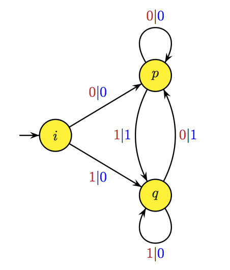
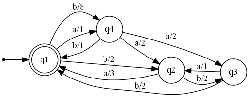
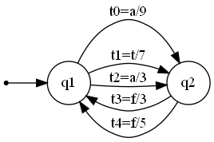
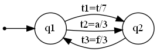
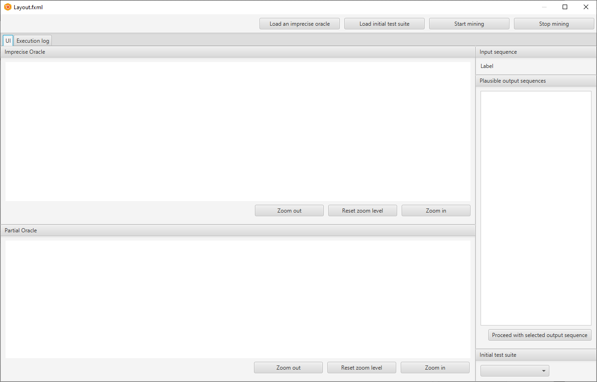
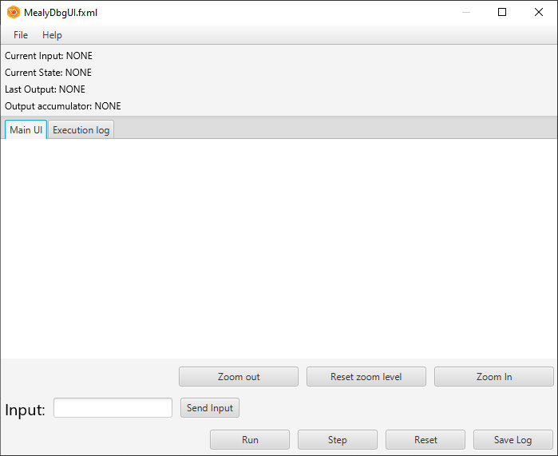
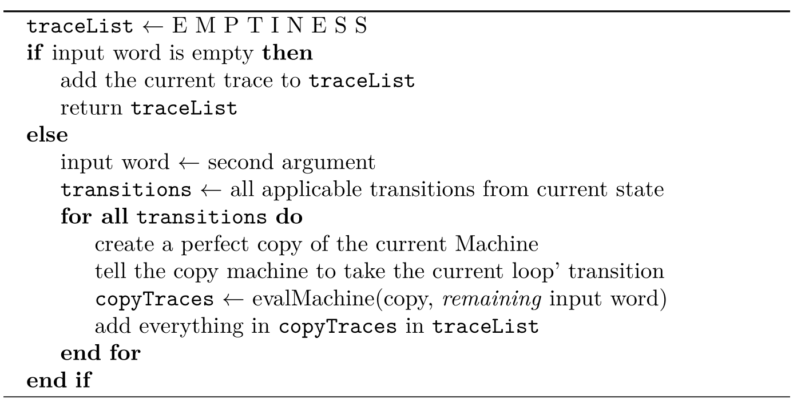

Mealy machine, Java records, and some spicy scalability
It has been a while.
A lot of things have happened.
What I am interested in right now is to talk about my bachelor's thesis.
Bachelor's thesis:
Bachelor's thesis or that final project you do in your final year idk different places have different names for these things I guess.
It was basically an application to provide a graphical interface for test oracle extraction, where the oracles are represented by mealy machines.
I will back up and explain.
A mealy machine is a finite transducer, a specific kind of finite-state-machine, that, in addition to transitioning on input letters, also emits output letters.
Big distinction: finite transducers don't have a final/accepting
Here, let me quote Wikipedia:
In the theory of computation, a Mealy machine is a finite-state machine whose output values are determined both by its current state and the current inputs. This is in contrast to a Moore machine, whose (Moore) output values are determined solely by its current state. A Mealy machine is a deterministic finite-state transducer: for each state and input, at most one transition is possible.
Now, reading that definition I am a bit surprised at the A
Mealy machine is a deterministic finite-state transducer, because
I thought that had nothing to do with it, and I am still kind of
suspicious that that's part of the formal definition, however I don't
think it matters that much.
I can go for paragraphs explaining just what it is; but I'll keep it short, TL;DR 1. Mealy machines are finite state machines. 2. Every time a transition happens, the machine also emits output - you can imagine this as the transition label having the corresponding triggering letter accompanied by the output letter - as in, the label between two states is 'a/0' instead of 'a'; and the 'a/0' means 'on the letter a, change state and emit 0'
In addition to this, the formulation I am interested in is one of a non-deterministic Mealy machine, meaning that a state can have arbitrarily many applicable transitions, relative to an input token.
Here is an example of a deterministic finite state machine:

So as you can see each transition is labelled with two main letters
separated by a vertical bar in this case. From the initial state
i if you get 0 the machine changes its current
state to p and outputs a 0 (Blue one on the
label). And so on. In this case the specification being modelled here is
the XOR-function. Two zeros/ones give you a zero, otherwise you get a
one. A bit of a caveat is that this modelling is more attuned to
electronic systems in the context of edge detection than programming
context, especially given the fact that on only one input, you don't
expect the XOR-function to short-circuit and give you input earlier than
the moment knowledge about the second argument is there, but it gets the
point across just as well, I hope.
An example of a non-deterministic mealy machine would be:

… There really isn't anything new here, literally the only different thing is the addition of outputs on transitions1
What is the impetus for caring specifically about the non-determinism aspect? Well …
Impetus:
Test oracles:
If I were to explain it in my own fancy terms, I would say that a test oracle is a computational entity that captures the behavior of a given system; its main purpose is to give a well-defined, unambiguous description of the evolution and responses of a system.
It corresponds to a finite state machine.
They are, in essence, codified specifications that assist in the evaluation of the behavior of Systems under Test.
Since the model of the test oracles and much of the process of designing them can have choke-points where ambiguity arises because of some inherent mis-understanding, mis-interpretation or things like that, there can be multiple ways to define the responses and reactions of a system.
These variants can be summarized simply with a non-deterministic mealy machine.
Therein lies the insight that is needed to understand why I (we) are interested in them.
In particular:
In particular, what you do when you have this non-deterministic finite state machine, since it is representing ambiguity in your system, is you try to get rid of it, obviously. You do this so that you can extract a deterministic finite state machine that well models the desired behavior.
So, my contribution, is sadly not to implement the algorithms by which you can do this, but rather merely to provide a graphical interface to allow for the manipulations necessary for this stuff.
This interesting, phenomenal, intriguing set of algorithms, and I don't get to have fun with it?
Very sad …
The specs:
I would love to make a description of what the software should look like etc., but I can't do that without also talking about the main thing, since the View should at least be aware of the model …
So, basically: non-deterministic finite state machines, we care about
reducing ambiguity, so we focus on where it arises, which immediately
leads back to the States of the automaton, since ambiguity
means that for some States, an input may lead to different
places with different output, which can help us
differentiate between alternatives, and thus eliminate
bad ones.
Thus, the strategy is to make inquiries to the (initially
non-deterministic) oracle by targeting suspicious
States and including the letter whose output is uncertain
(under those States) in the inquiries, so we can determine
the wrong transitions and eliminate them.
This process is iterative, with room for improvement, I think.
Example:
A very simple example: consider a 2-state mealy machine like so:

There are two states.
Three ways to go from the initial state q1 to
q2, with transitions t0, t1 and
t2,
Two ways to go from q2 to q1,
t4 and t5.
The initial state is q1, on input 'a' there two possibilities, and for the second state there is ambiguity in regard to input 'f', two possibilities as well.
This isn't a practical example really, I'm doing it for the illustration only, but I guess you can say it is practical in that it helps get across the message.
SO, ANYWAYS, it is non-deterministic, right?, and I've named the
transitions too, there is ambiguity in t0, t2,
t3 and t4, let's find this machine's
deterministic form.
By the way this will be easy af (sorry, couldn't not do
it)
Anyway, say we feed this machine the string "af", and
say we get as output (on the output tape or something) the string
"33", what (if any) information does this tell us?
It tells us much, since we know which of the first two choices
(t0/t2) was taken; t2, since the corresponding output was
3, not 9. Likewise for the second ambiguity
(t3/t4); we know, again with the help of the output, that the transition
that was taken was the t3, not the t4.
Resulting in this deterministic machine. 
So, for an introductory start I think this isn't too bad, although perhaps I should have shown the iterative steps I've spoken about.2
With that being said; I believe I can tell you the crux of what I've understood of the goals: - Graphical interface that shows the machine, - Should allow the interaction and the iterative process spoken about, - full transparency nice to have; → execution log that tracks each interaction between user and UI, controller and model, etc., - Functionality to 'save' machines in some textual format necessary, likewise for being able to load them into the software,
Also, one of the requirements was also apparently Java … which I wasn't too thrilled about, but we'll talk about that soon enough, given that it seems the interest was mainly for the JVM.
Used Tools/tech:
In any case, I will spare you the comparative analysis of the tools I've considered and whatnot, but the technologies/tools used were: * JavaFX, Java GUI library, for creating and controlling UI. * Graphviz was the tool I ended up using for displaying machines, this was not a straightforward solution to come up with, but it was the one I ended up with anyway. * ANTLR, for parsing and generating machines from text files. * IntelliJ for code editing and Git, for Version Control.
JavaFX:
Really neat thing, was apparently part of the standard Java SDK, but was removed, and now it requires outside installation. It is a really neat thing to be honest, and Scene Builder (WindowBuilder but for JavaFX) is awesome and much more powerful than Swing's tooling, Scenebuilder gives you a WYSIWYG editor to build your UIs, that generates a fxml file, which is a declarative view of the UI, very nice and very … functional … 3
In any case, I ended up creating two UI, one being the major important one, the other one being just a kind of testing ground that turned out better than expected.
The first one was the one that is allegedly going to allow for all those fancy Oracle Mining operations:

Not too important: - The two views are to view the machine, they are WebViews, which are quite fancy and very interesting if I say so myself, I'll leave it up to you to click the link and see why that might be the case. The upper view is for the original oracle, the second one is for the partial oracle, iE serves to show the iterative intermediate steps of the transformation of the aforementioned oracle, in other words, the upper view is a rather static view of the original Oracle, and the lower one is for the up-to-date Oracle. - The side views are a bunch of ListViews to show the current 'plausible output sequences' that are possible to be generated and there is a button down there that allows the user to select the correct expected output.
Plausible output sequences? What are those?
Well, to explain these, I will refer back to the initial mealy machine I used as an example.
In that case for instance, you would enter your input string, as
af then the machine will be evaluated and return to you all
the possible outputs that will come from it, that is an example
of the 'plausible output sequences'
As you can see, they are the main deciding element in our 'game loop'', so to speak, because the feedback from the selction of one output sequence over another one is what disqualifies many invalid transitions. 4
The second was one I had created because I lacked knowledge on a critical aspect of software development, and one that I should fix ASAP: Testing and stuff like unit testing and such, which is embarassing, and I am going to fix this defect as soon as I can.

This one is self-explanatory; I feel like explaining it would be redundant as I expect anyone with any familiarity with automata to just intuit the use case for this interface.
ANTLR:
ANother Tool For Language Recognition, it is used for parsing text files that contain textual representations of machines, I have never had the chance to work with this, so I learned it on the spot, it is pretty neat, and I may dive deeper into it someday.
There are two ways to construct data from tree walking, creating visitors or creating listeners, I went with listeners since they seemed easier to implement, and I was, at that moment already grasping for as much time as I could so when I implemented the listener class, and it worked, I was already happy.
Won't detail how this was done as this is kinda secondary to me right now. 5
Machine design:
The main model I ended up with is:
zen@LAPTOP-UB70DERF:/mnt/c/Users/zenAndroid/IdeaProjects/oracleExtractor/src/main/java$ ls -R
.:
app module-info.java sample.puml
./app:
oracleextractor
./app/oracleextractor:
DebugController.java DebugUI.java MainController.java Main.java model reader
./app/oracleextractor/model:
exceptions Machine.java State.java Transition.java utils
./app/oracleextractor/model/exceptions:
BadInputException.java NoLastChange.java NoPendingInput.java NoTransitionFound.java StateNotFound.java TransitionNotApplicable.java TransitionNotFound.java
./app/oracleextractor/model/utils:
AutomatonListener.java ToggleableBoolean.java Trace.java Utilities.java
./app/oracleextractor/reader:
automatonBaseListener.java automaton.g4 automatonLexer.interp automatonLexer.tokens automatonParser.java automatonVisitor.java
automatonBaseVisitor.java automaton.interp automatonLexer.java automatonListener.java automaton.tokensapp/oracleextractor: All necessary classes: - DebugUI
DebugController Main MainController := Classes for the UIs. - model:
Classes necessary for modeling the mealy machine - reader: classes that
handle the parsing
app/oracleextractor/model: All modelling classes: -
exceptions: Custom exceptions for the handling of weird and incorrect
behavior in the machine. [^fpErrorHandling] - Machine.java, State.java,
Transition.java : Central pieces of the puzzle, will talk in better
detail. - utils/AutomatonListener.java : class that inherits from the
listener in reader package that was auto generated from
ANTLR. Implements a custom Listener that builds the Machine as it
listens to the TreeWalker's events. - utils/ToggleableBoolean.java :
Proxy, ad-hoc class that is basically a shotty work-around for a certain
restriction. [^shameful] - utils/Trace.java : Holds a trace of the
machine's execution; iE which transitions the machine took. -
utils/Utilities.java : Utilitiy functions that I could have technically
included elsewhere, but I just didn't have it in me because I thought
that they didn't fit the model, I'm talking stuff that wouldn't even
have made much sense: - getPopup,
getTransitionChooserPopup, getStateByName,
evalMachine, findTransition, etc … - reader :
Stuff that was auto generated by ANTLR, except for the g4 grammar file
that I wrote, the baseListener, the Lexer, the Parser, and the Listener
were what I used, although of course they themsleves used the other
weirdo files (tokens and such), did not use the visitor as I said.
app/oracleextractor/exceptions, utils: Execptions and
utilities: - The exception aren't too important: Can just guess or
browse the code in the repo, they aren't hard to detect, and their
purpose is rather obvious.
Machine:
Fields:
private ArrayList<State> states;
private State initialState;
private State currentState;
private ArrayList<Character> inputSequence;
private ArrayList<Character> producedOutput;
private Set<Character> inputAlphabet;
private Set<Character> outputAlphabet;
private Boolean pendingInput;
private ArrayList<Transition> machineTransitions;
private Trace machineTrace;The fields are self-explanatory. The methods are more interesting. ### Methods: Not going to bother mentioning getters and setters (Java is bloated! Did you know Java is bloated?)
public void nonDeterministicConsume()
// Performs all the operations necessary to consume the input.
public void getNextInputToken()
// Essentially gets the next letter from the inputSequence,
// but also changes the pendingInput flag if there remains no input letter.
public void takeTransition(Transition transition)
// Take transition, change state accordingly and emit output.
public void processOutput(Character sourceTransition)
// ... This method does something incredible;it proces output :D
public String toDot()
// Return a dot representation of this Machine in a string, to be sent to the dot executable
// and turned into an SVG file that is show-able on the WebViews.
public Machine makeMachineCopy()
// This is how the 'reset' button works (the 'reset' in the DebugUI)
public Machine makeCurrentMachineCopy()
// This is like the older one except it also copies the global state of the Machine
// (its current input, its trace history and so on), I will explain the need for this later.State
Well, the State and Transition classes are
both special here, because I didn't implement them using regular old
classes, I used Java
Records for the job.
TL;DR: java records are immutable classes that generate getters and setters and other utility methods automatically, they are less verbose and god knows how much cooler that is.
Excrept from the link above.
A record consists of a name (in this example, it's Rectangle) and a list of the record's components (which in this example are float length and float width).
A record acquires these members automatically:
- A private final field for each of its components
- A public read accessor method for each component with the same name and type of the component; in this example, these methods are Rectangle::length() and Rectangle::width()
- A public constructor whose signature is derived from the record components list. The constructor initializes each private field from the corresponding argument.
- Implementations of the equals() and hashCode() methods, which specify that two records are equal if they are of the same type and their corresponding record components are equal
- An implementation of the toString() method that includes the string representation of all the record's components, with their names
It's hilarious to me how Java slowly implements Functional-like features … slowly converging towards
Common Li…
Fields
Ah, screw it I will just straight up put the entire file here.
public record State(String stateName, ArrayList<Transition> outGoing, ArrayList<Transition> inComing) {
static int id = 0;
public static State getState() {
// These constructors are a work-around around the fact that:
// 1- Cant declare default values for parameters
// 2- One of these constructors initializes the name using the id
// the other one just gets the name as an arg.
}
public static State getState(String stateName) {
// These constructors are a work-around around the fact that:
// 1- Cant declare default values for parameters
// 2- One of these constructors initializes the name using the id
// the other one just gets the name as an arg.
}
public void addIncomingTransition(Transition t) {inComing.add(t);}
public void addOutgoingTransition(Transition t) {outGoing.add(t);}
}(ctor code omitted)
That's it, feels refreshing to be honest, of course … java (being java and all) nothing is really immutable, it's just that the reference that is immutable, not what the reference points to…
I found that counter-intuitive and kinda lame. But well, since it's like this, I'll see if I can exploit it.
And that is exactly what I did with Transition, I
basically just profited of the auto generated code, otherwise created a
whole new other class just to hold my boolean variable, so I can work
around the immutability by having my mutable state in an external
wrapper.
I know I know, but it is much better than classes. ## Transition
public record Transition(Character transitionTrigger, Character transitionOutput,
State sourceState, State destinationState,
ToggleableBoolean wasVisited, ToggleableBoolean transitionValid) {
// ToggleableBoolean is a wrapper to the boolean value I actually care about.
}Methods:
Not many interesting methods here, wasTaken,
setTaken, isTriggeredBy are the important
ones, and they aren't sophisticated at all, the names speak for
themselves really
A nice algorithm:
So, without further ado, I will skip over the mundane algorithms, and talk about the central one.
Let's see …
Given that this application wasn't even supposed to dive deep into the guts of algorithms, I would say that this is still beyond the requirements of the thesis, but I did it anyway to see if my model makes sense/and how tortuous it would be to develop a sizable algorithm with it.
Turns out it's not extremely hard, so that's good. Although not perfect.
evalMachine:
This algorithm, as the name says, evaluates6 a
Machine on a given input, basically, for a given input, it figures
out all the possibles ways that input can be consumed by the
non-deterministic machine and outputs a series of
Traces holding the necesary info.
Here is how it works:

The entirety of the code can be seen here.
In this blog post so far I haven't really discussed the code in detail because I believe that while it works, I don't like it very much from an efficiency/elegance point of view.
A lot of the code I feel like can be baroque in a very hard to capture way.
Of course, I'd like to just go ahead and say 'woe is me, OOP doesn't help me model this correctly', but I think that while some aspects of OOP are very weird to me (Having to declare a class to define top-level functions, or alternatively declaring those methods in some classes which always ends up being a weird decision because what if my algorithm describes an operation that matters to two types of class and not just one?[of course you end up making an arbitrary choice then, which kinda destroys your conceptual 'every class has its own operations', cargo cult programming smh] etc. etc.).
I still believe some of it just tends to the fact that OOP hides state from me and I don't like it very much, and also with Java I feel like there is just some whole new level of … shitfuckery and exceptions to some rules (like the mutable fields in record classes), anyway, my movement to record classes made me think about some stuff … some stuff that leads directly into Functional Programming land because this turns out to be a great opportunity for me to try out rewriting an OOP decent-sized project into an FP-based one, and seeing how I can scale this up even more.
More importantly, when I finish this, I can have a clear idea in my head of what working in both worlds is like.
The rewrite:
So, the r e w r i t e, … I am actually considering many
languages for it actually, long term that is, but for now, the language
I picked is Scala, I
picked it for many reasons, one of which is the fact that it targets the
JVM, and the other one is the fact that between the alternatives I
considered (mainly Scala and Groovy), it seemed like the one that
focused on functional programming.
The other reason of course, is that I already mentioned I was interested in Scala, so there you go.
I think I might add some other post to outline the feature set that attracted me to this , or you can see for yourself, but TL;DR: Martin Odersky (creator of Scala) said that ''Scala was designed to show that a fusion of functional and object-oriented programming is possible and practical.'', obviously I am not about to take an advertisement as serious info about something (who would?), but it was still intriguing, and, having fooled around with it just a bit, quite true I think.
Not sure exactly how the models are going to change, if the models are going to change, but I am looking forward to seeing how it goes.
I will share my progress once I reach some sort of milestone and
describe the changes I've made, but so far there are plenty of things
that I am excited to implement and learn about: - Functional Design;
especially thinking about how the overarching machine parts and logic
will play out. - Static typing; This was surprising to me, because I did
not expect Scala's type system to be so advanced, you would think
initially that it's only got the basic aspects of product types, sum
types, type annotations, and enums or something like this: but actually,
it's quite stellar in this regard, so it should be interesting to see
the effect of introducing typed logic into the application (and maybe
later I'll develop this in scheme or racket or something, to see the
difference) - Functional error handing: while I can go on my merry ways
and trow around exceptions all I want, the functional way (for the most
part …) is to use Option type class, the
Try/Success/Failure or the Either/Left/Right -
ANTLR?? nah man I'm cool, I'll use P A R S E R _ C O M B I N A T O
R S: Really interested in using these and getting familiar with
them, they seem like a neat little thing that scales nicely.
Footnotes:
-
Which still imposes some interesting design choices that would otherwise not crop up, I think.↩︎
-
As in, here is the machine now that we've gotten rid of the first ambiguity (shows image with the transition in red), and now we see that so-and-so and hare is the second iteration of removing the ambiguity (shows the machine), and now we see that there is no ambiguity, and so we conclude with this machine.↩︎
-
I cannot for the life of me stop fantasizing about using some tooling that will allow me to write an s-expression that holds the entirety of my UI spec, instead of disgusting XML things … some day … some day↩︎
-
Something tells me I am not explaining this well, possibly because I am confused a bit about it, which is possible to be honest given that I didn't develop the algorithms to deal with this (during the thesis), only the UI elements seen here.↩︎
-
And if I do end up succeeding in implementing major parts of this in Scala, I might even forego ANTLR nd use some parser combinator library, feels like it will be less hassle that way, although learning ANTLR will always be a minor goal for me, more on Scala soon in the post.↩︎
-
Not the interpreter kind of
evalI'm afraid :(↩︎